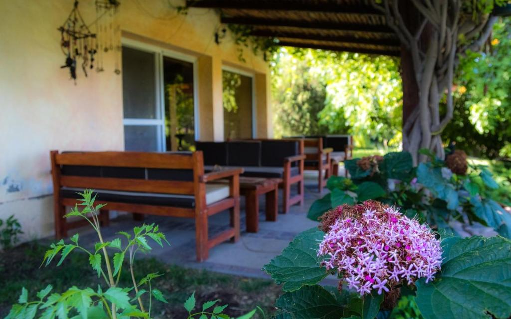
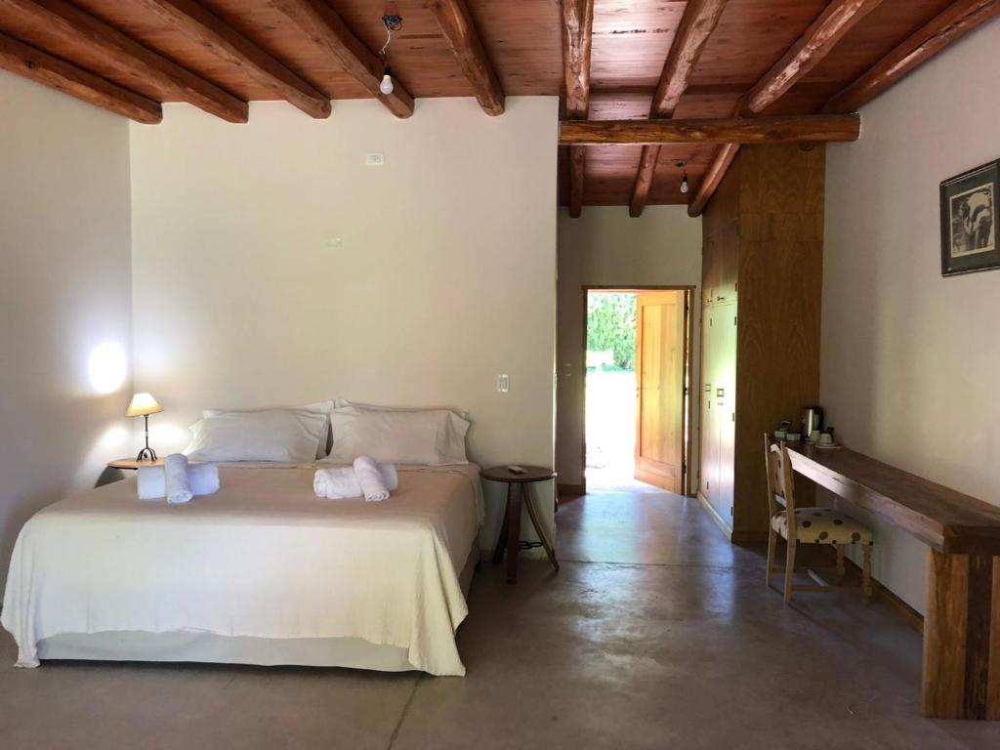
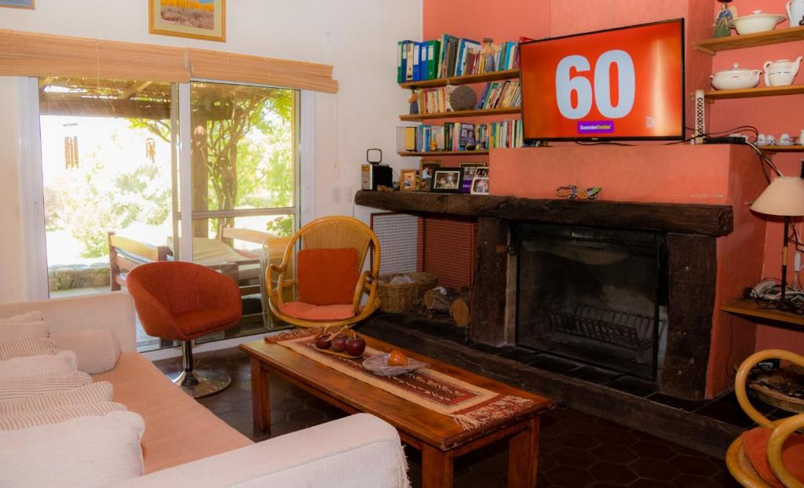
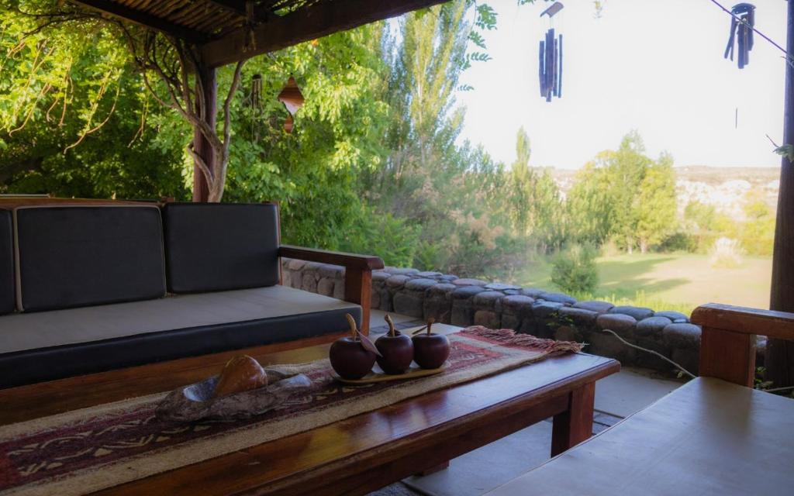
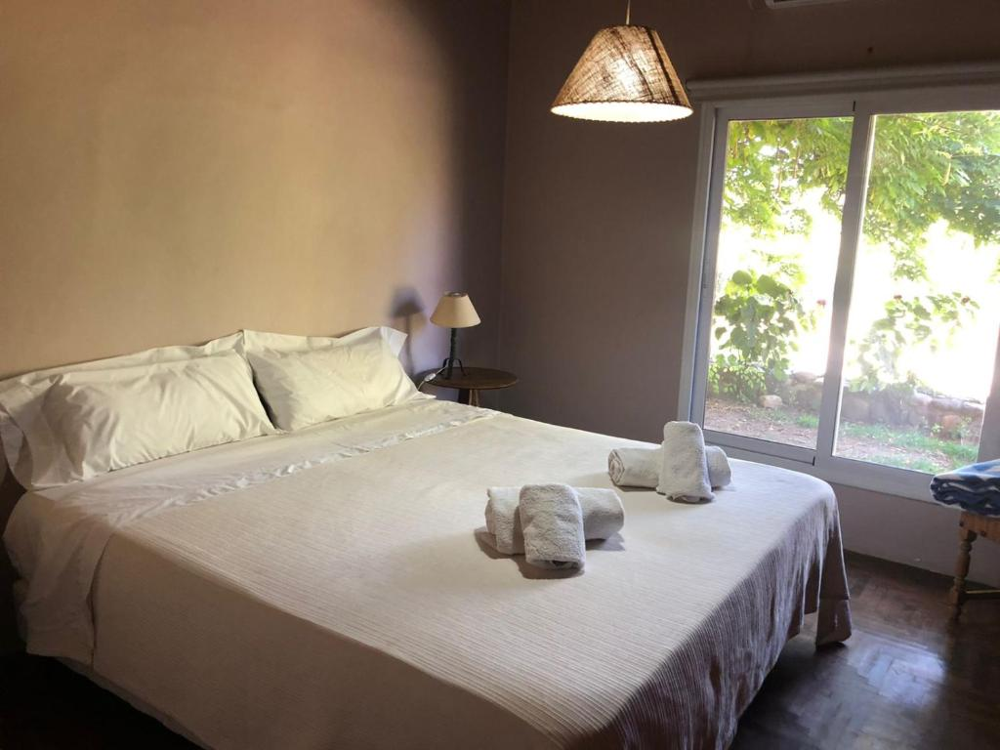
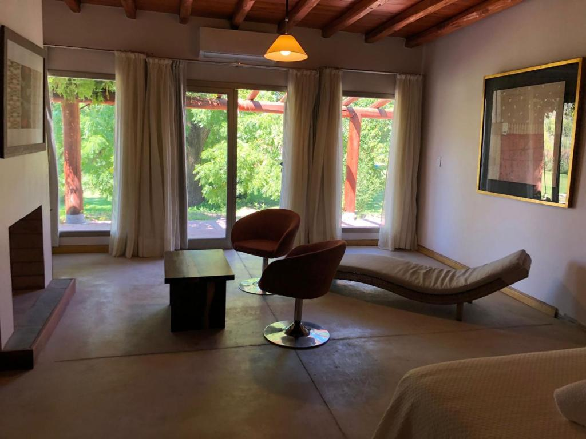
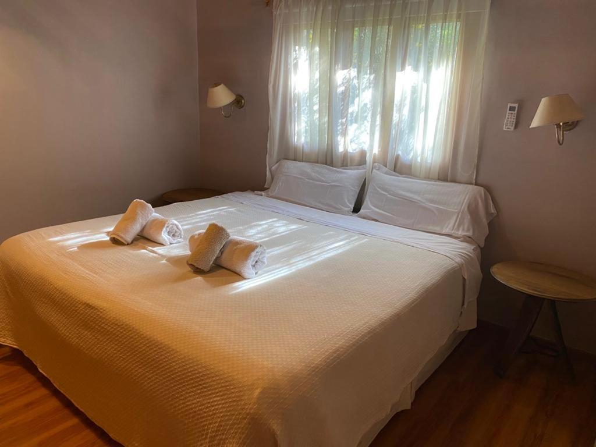
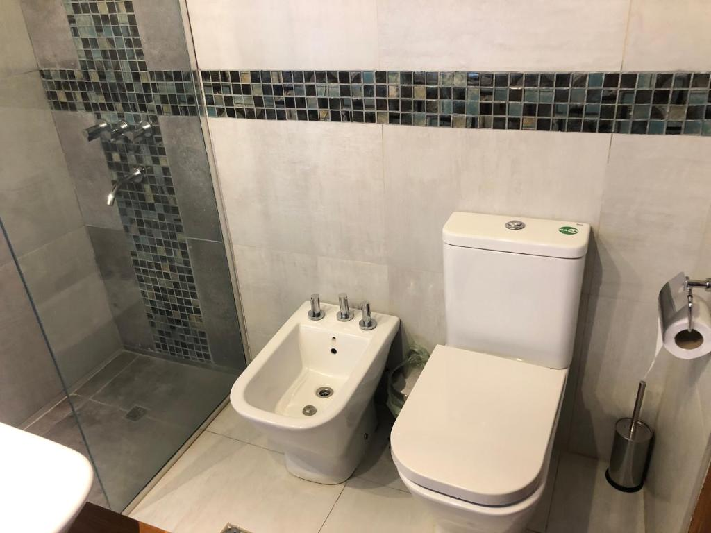

La Finca del Rio - Wine Farm se encuentra en el corazón de Tunuyán, en la hermosa provincia de Mendoza, Argentina.
Este hotel de campo se destaca por su entorno sereno y acogedor, ideal para aquellos que buscan desconectar de la rutina y disfrutar de la belleza natural que lo rodea. Con alojamientos cómodos y bien equipados, la Finca del Rio promete una estancia inolvidable en un paisaje de viñedos y montañas.
La Finca del Rio ofrece una experiencia única que combina confort y naturaleza. Sus instalaciones cuentan con aire acondicionado, cocina totalmente equipada con zona de comedor, heladera, hervidor de agua y horno, asegurando que los huéspedes se sientan como en casa. Además, el hotel incluye estacionamiento privado gratuito y la posibilidad de disfrutar de un delicioso desayuno continental y a la carta cada mañana.

Refrescate en los días soleados en nuestra hermosa piscina
Sin necesidad de reserva, espacio seguro para tu vehículo
75 Mbps ideal para streaming y videollamadas
Espacios al aire libre para disfrutar de la naturaleza
Mascotas bienvenidas sin costo adicional
Aire acondicionado y calefacción en todas las habitaciones







La ubicación de la Finca del Rio es uno de sus mayores atractivos. Situada en Avenida Costanera 891, Tunuyán, los huéspedes pueden disfrutar de la tranquilidad del campo, pero también de la cercanía a diversas atracciones.
A solo 26 km, los amantes del vino pueden disfrutar de visitas y degustaciones en esta reconocida bodega.
La región ofrece múltiples opciones para el senderismo, ciclismo y paseos a caballo.
A pocos minutos en coche, donde se pueden encontrar restaurantes, tiendas y mercados locales.
Un destino ideal para los amantes de la naturaleza y la aventura, ubicado a una corta distancia.
El check-in se realiza de 12:00 a 23:00. Si necesitas llegar antes, te recomendamos comunicarte con el alojamiento para consultar la posibilidad.
Sí, se sirve un delicioso desayuno continental y a la carta cada mañana, perfecto para comenzar el día con energía.
¡Sí! Las mascotas son bienvenidas sin costo adicional, así que no dudes en traer a tu compañero peludo.
La propiedad solo acepta pagos en efectivo, así que asegúrate de tener efectivo a mano durante tu estancia.
Contáctanos para reservar tu escape perfecto en Finca del Río
Avenida Costanera 891
Tunuyán, Mendoza
Argentina
12:00 - 23:00
Efectivo